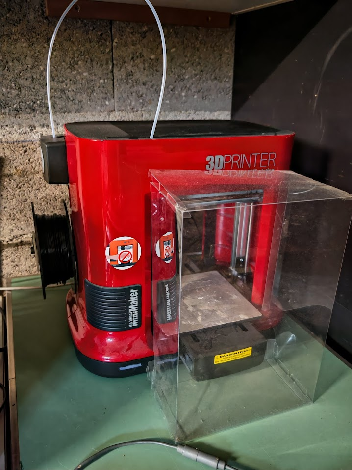

Atelier Retrogaming
Un bon passe-temps pour les développeurs
Antonin Brugnot
Introduction
« Retrogaming » (parfois partiellement francisé en « rétrogaming ») est un terme anglais formé du latin retro, signifiant « en arrière », « en sens contraire », et de l'anglais gaming, qui désigne la pratique des jeux (vidéo), ou games3.
Disclaimer
On ne parlera pas des ROMs (Read-Only Memory), ou presque pas...
Mes projets
- Megadrive modée
- Anbernic RG 351P
- Anbernic RG 35XX
- Console maison Raspberry PI
- Nouvelles consoles maison
Megadrive

- SEGA
- 14/08/1989
- 29 millions
- Presque 10 ans
- Plusieurs versions et addons
La bête
- Megadrive II - MK-1631-50
- Motorola 68000 16/32 bits cadencé à 7,67 MHz
- 64 ko de RAM et 64 ko de mémoire vidéo 320x224
- Processeur secondaire Zilog Z80A 3,58 MHz
- Modifiée, switch 50/60 Hz
- Easy Cash (50 balles)
Ajouts
Convertisseur Peritel vers HDMI
- Utiliser un écran moderne
- Il y a toutes les qualités...
Everdrive
- Cartouche avec Carte SD
- Mini Firmware pour récupérer ROMs dans SD
- Charger la ROM dans la mémoire de la cartouche


Petit bonus

Anbernic RG 351P

- Rockchip QuadCore RK3326 1,5 GHz
- DDR3L 1Go
- Dalle IPS 480x320
- 3500 mAh
- Carte microSD HC 64Go
Concrêtement
- NES, SNES, Megadrive, PS1, ...
- Jusqu'Ã la PSP, Dreamcast
- Firmware EmuElec 💩
AmberElec
- Le site
- v 20230203
- Firmware communautaire (RetroArch/EmulationStation)
- Tourne comme une montre


Anbernic RG 35XX

- Quad-core ARM Cortex-A9 1,5 GHz
- DDR3 256MB
- Dalle IPS 640x480
- 2600 mAh
- 2 x Carte microSD HC 64Go
Concrêtement
- NES, SNES, Megadrive, N64, ...
- Jusqu'Ã la PS1
- Firmware EmuElec 💩
Garlic OS
- Le site
- v 1.4.9
- Firmware communautaire (RetroArch)
- Overclocking possible
- Des lenteurs pour ouvrir les jeux


Raspberry PI

Retropi

- Le site
- Super complet
- Trop...
Lakka

- Le site
- Plus simple
- Moins customizable
- C'est ce que j'ai choisi
Autres Distributions
- Ce qui tourne le mieux sur votre device
- Liste des émulateurs
- Communauté
Quake 3 on K3S on Raspberry PI
- K3S
- Docker compose
- Conversion manifests K8S
- Accès par navigateur
Première console DIY
- 2017
- Raspberry PI 3
- Lakka
- Mini clavier
- Manettes...
Custom case


Manettes
- Par console
- Une manette pour les lier toutes ?!
- AliExpress
- Amazon
- Attention à la qualité
Mini-clavier
- Pas si bête
- Recherche, debug, shell
Résultat
- Fait le taff
- NES, SNES, Megadrive, ATARI 2600
- En multi (souvent 2)
- N64 si rêglages emulateur
- La WIFI c'est bien (SMB2 ou NAS)
Nouvelle console DIY
- 2024 🚧
- Raspberry PI 5 (8Go)
- Lakka (et oui)
- Mini clavier, manettes
- PS1, PSP, PS2
Pour gérer toutes ces MicroSD

A vous !
- Expérience RetroGaming ?
- Vous avez fait quoi ?
- Vous voulez faire quoi ?
- Tester, tester, tester
Merci !
bio.yaml